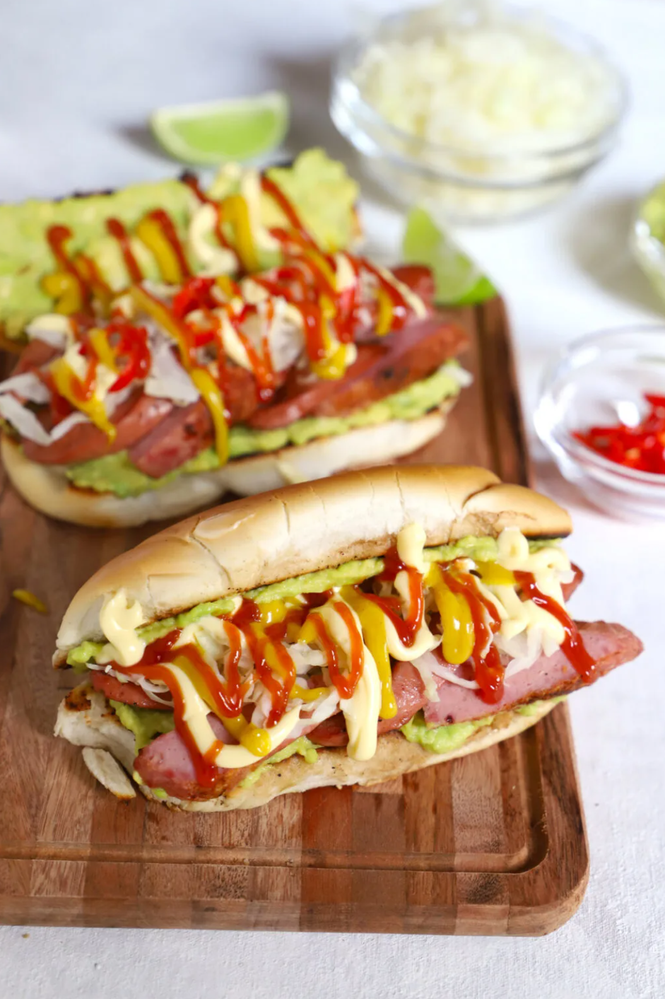

Tacos Recipes

Description
Shucos is the Guatemalan name for hot dog, but the preparation is also out of the ordinary.
Guatamalan Shucos are prepared with toasted bread and guacamole which makes them different
from any traditional American hot dog.
Ingredients
- 2 cups thinly sliced green cabbage
- 1/2 onion
- 1 teaspoon salt
- 2 avocados
- 1 teaspoon salt
- Juice of 1 lime (2-3 Tbsp)
- 4 hot dog wieners
- 4 sausages (chorizo or longaniza are traditional)
- 6 hot dog buns
- 4 tablespoons butter
- Ketchup
- Mayonnaise
- Mustard
- Habanero peppers, sliced (optional)
Steps
- Place the sliced cabbage in a medium pot. Cover it with water, add the ½ onion and salt.
Bring to a boil and simmer for 5 minutes.
- Remove the onion from the pot, drain the cabbage and refrigerate it until ready to use.
- Peel and mash the avocados. Season them with salt and lime juice. Refrigerate until ready to use.
- Heat a heavy bottom frying pan over low heat. Cut the wieners and sausages in half. Cook the sausages for
about 10 minutes, turning halfway through. Remove them from the pan and add the hot dogs. Cook each side for
3 to 5 minutes. Cut both into bite sized pieces.
- Add a little bit of butter to the pan. Place the hot dog buns, cut side down, on the hot pan and cook for
about a minute, or until brown and crispy. Turn and toast on the other side.
- Spread a good amount of guacamole on both sides of the bun. Add a layer of sausages and hot dogs on top of
the avocado. Top with cabbage and condiments.
References
All information on this page is from Curious Cusiniere